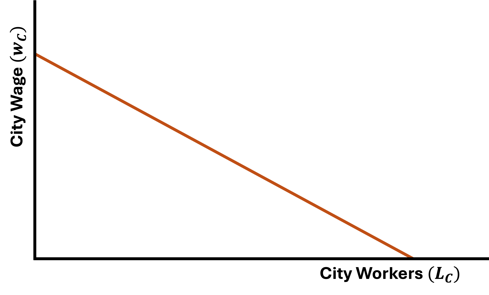
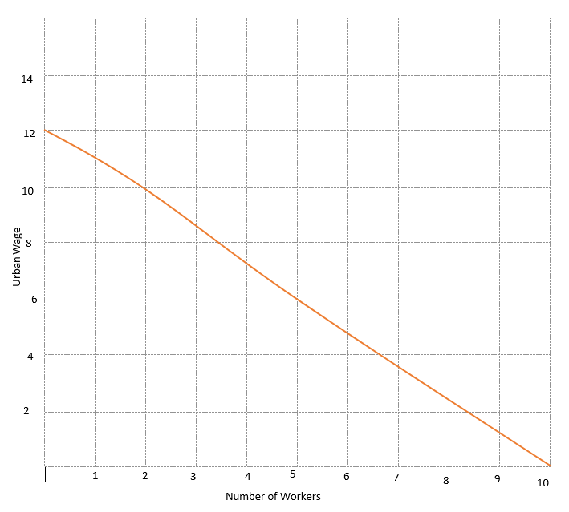
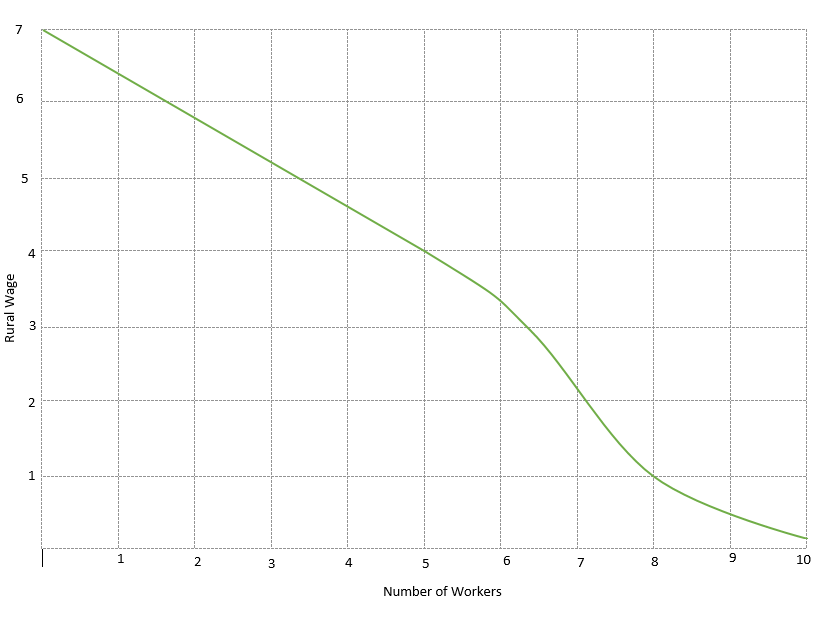
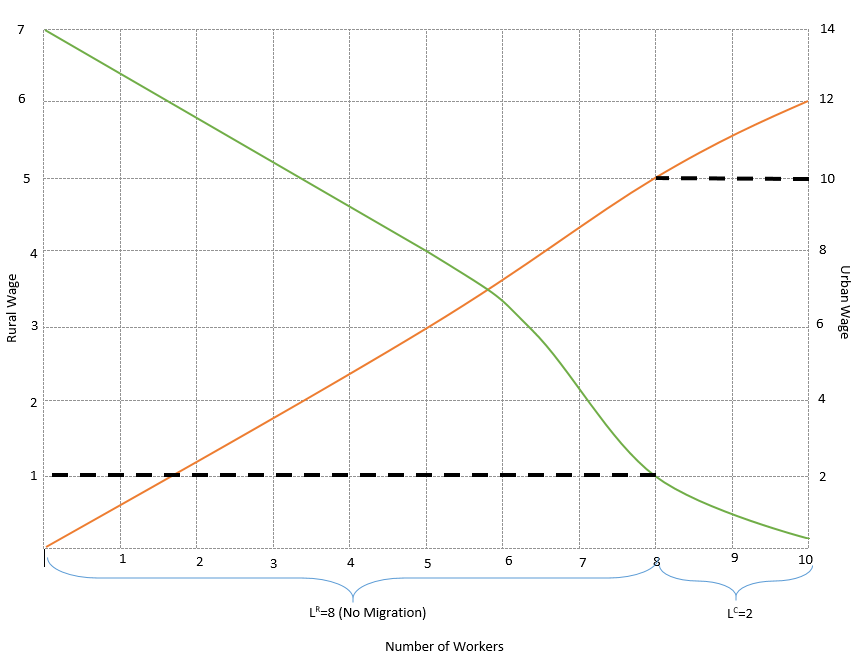
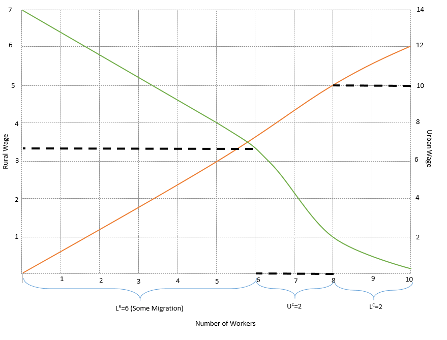

Microeconomics of Migration
The decision to migrate is one of potential trade-offs
- Do I stay in a rural area and try to make a living farming?
- Do I move away to a new place and look for work there?
- These decisions have costs and benefits, which is why the decision to migrate is an economic one
Microeconomics of Migration
Consider an agent living in a rural area
- The agent has a choice:
- Work in the rural area (farming) and receive wage $X per day
- Move to the city and work there (manufacturing) and receive wage $Y per day
- Where \(Y > X\)
- What should the agent do? Move to the city
But
- What if there is no guarantee of employment once they move?
- Let’s introduce a model that will allow us to use this uncertainty
Todaro Migration Model
Premise: Agents consider labor market opportunities available to them in the rural and urban sectors and choose the one that maximizes their expected gains from migration
Main Assumptions
- Agents have knowledge of labor markets
- Migration has no cost
- Two regions to work in
Two Regions
- Rural with rural wage \((w^{R})\) which is flexible enough that there is full employment
- City with city wage \((w^{C})\) which is fixed
Rural: Everyone can at least work on their own farm
Urban: Consider some form of minimum wage or the need for urban employers to pay their workers a large enough wage to attract talented workers
Todaro Migration Model: Setup
There are a total of N workers in the economy
There are \(N^{C}\) and \(N^{R}\) workers who live in the city and rural area, respectively:
\(N = N^{C} + N^{R}\)
- Not all workers who live in the city are employed
- Populations in both areas look like:
\[\begin{align*} N^{C} &= L^{C} + U^{C} \\ N^{R} &= L^{R} \end{align*}\]
- where \(L^{C}, U^{C},\) and \(L^{R}\) are the number of city employed workers, city unemployed workers, and rural employed workers
Some are unemployed or work in an informal sector
Todaro Migration Model
- If we combine the previous equations we get:
\(U^{C} = N - L^{C} - L^{R}\)
- We can take one step further and calculate the unemployment rate as:
\[ u^{C} = \dfrac{U^{C}}{U^{C} + L^{C}} = \dfrac{N - L^{C} - L^{R}}{N - L^{R}} \]
The number of unemployed people in the city is equal to the total number of people minus the number of employed city workers minus the number of rural workers
Todaro Migration Model: Equilibrium
- Agents in the model base their migration decision on their expected income in the city
- Even though the wage is the city is fixed, there is some probability that if the agent migrates they will be unemployed
- The expected city wage is given by:
\(E(w^{C}) = \dfrac{L^{C}}{N - L^{R}} \times w^{C} + \left( 1 - \dfrac{L^{C}}{N - L^{R}} \right) \times 0\)
- Where \(\left( 1 - \dfrac{L^{C}}{N - L^{R}} \right)\) is the probability that the agent will not find a job
Explain parts here
Todaro Migration Model: Equilibrium
\(E(w^{C}) = \dfrac{L^{C}}{N - L^{R}} \times w^{C}\)
In this model, an equilibrium is a set of numbers
- Equilbirum = \((L^{C}, U^{C}, L^{R}, w^{R}, w^{C})\)
- We can solve for it using graphs
- Let’s try an example
Second part is just zero so expected wage is just this



Numerical Example
Let’s look at an example with numbers

Urban Wages

Rural Wages
Numerical Example
We want to put both demand curves on the same graph
- We put urban wages on the right-hand side and rural wages on the left-hand side
- Be careful to notice the difference in axis values
- Urban wages are higher than rural wages
Numerical Example - Combined Demand Curves

Numerical Example - Stage 01
Let the wage in the urban area be fixed at 10 \((w^{C} = 10)\)
Urban employers demand 2 units of labor \((L^{c} = 2)\)
- For now, suppose no one migrates to the city
- Everyone works in the rural sector and receives a wage of 1:
- \(w^{R} = 1\) and \(L^{R} = 8\)
Numerical Example - Stage 01

Numerical Example - Equilibrium?
Is this an equilibrium?
- The $10 urban wage is tempting for rural workers
- But there is a chance they will not get a job in the city
- So there are still migration dynamics to consider
- Let’s suppose that, at first, two rural workers choose to migrate
- This means there are now 4 workers in the urban area
Numerical Example - Stage 02 (Migration)
So with 2 brave souls migrating to the city, we now have 4 people in the urban area which implies:
- There is an increase in the number of people living in the urban area
- There is a decrease in the number of people living in the rural area
- The increase in the urban population reduces the probability that an urban worker is able to find employment
- At the same time, the reduction in the rural population increases rural wages
Numerical Example - Stage 02 (Migration)

Numerical Example - Finding New Wages
Recall we can find the rural wage by:
\[ w^{R} = \dfrac{L^{C}}{N - L^{R}} \times w^{C} \]
- We know that \(L^{C} = 2, N = 10, L^{R} = 6\) and \(w^{C} = 10\)
\[ w^{R} = \dfrac{2}{10 - 6} \times 10 = 5 \]
Is this an equilibrium?
Let’s check our graph again
rural wages is equal to expected urban wages in equilibrium
Numerical Example - Finding New Wages
Not an equilibrium
When there are 6 people in the rural area, the wage \(w^{R}\) is 3.3
Not enough people migrated to the city
Let’s see what happens when 3 people migrate
Numerical Example - Stage 03 (3 Migrants)

rural wages increase due to lower population
unemployment in the city is higher
Numerical Example - Stage 03 (Wages)
If 3 people migrate, then \(L^{R} = 5\) and \(w^{R} = 4\)
- Our equilibrium condition is such that \(w^{R} = E[w^{C}]\) :
\[\begin{align*} w^{R} = E[w^{C}] = \dfrac{L^{C}}{N - L^{R}} \times w^{C} = \dfrac{2}{10 - 5} \times 10 = 4 \end{align*}\]
- This is an equilibrium!
- We write this as \((L^{R} = 5, L^{C} = 2, U^{C} = 3, w^{C} = 10, w^{R} = 4)\)
- Writing it like this is important: it shows that the equilibrium is a set of values
The order is not important, but rather that all of them appear and have a value
Summary
- Biggest benefit of urbanization and migration to cities are agglomeration economies
- Biggest cost of urbanization and migration is congestion
- Outcomes of urbanization and migration are less clear:
- Does urbanization lead to higher social capital?
- Does urbanization lead to more inequality and less social capital?
- Who is able to migrate? The wealthiest? The best educated?
- Equally important is the ability of receiving cities to properly accommodate migrants
- Possibly the biggest issue surrounding urbanization in developing countries involves the lack of opportunity in rural areas
Policies
What can be done about some of the problems urbanization causes?
- Because this is a relatively new phenomenon, we do not have perfect solutions yet
1. Better Rural-Urban Balance
2. Anticipation
Policies
What can be done about some of the problems urbanization causes?
- Because this is a relatively new phenomenon, we do not have perfect solutions yet
1. Better Rural-Urban Balance
- Most policies are focused on urban sectors due to their economic and political importance
- This highlights the need for policies aimed at assisting rural workers
- Ex: Better access to credit and insurance markets for farmers should reduce the risk of working in rural areas
2. Anticipation
Policies
What can be done about some of the problems urbanization causes?
- Because this is a relatively new phenomenon, we do not have perfect solutions yet
1. Better Rural-Urban Balance
2. Anticipation
- Urbanization is not stopping and adjustments toward this is important
- Adjusting zoning laws might help ease congestion in major cities
- Serious investment in infrastructure is needed
Policies
What can be done about some of the problems urbanization causes?
- Because this is a relatively new phenomenon, we do not have perfect solutions yet
1. Better Rural-Urban Balance
2. Anticipation
3. Its on us to be conscious of how growth needs to be more guided
Growth for the sake of growth may not be a correct path